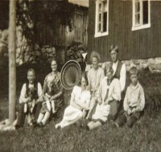
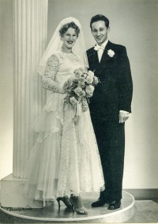

Lovise og Håkon sin slekt og familie
Lovise f. Eggan og Håkon Wahl
Personside 27
Kristian Bernhard Willumsen
M, #654, f. 19 april 1915, d. 15 april 1999
Familie: Ruth Fredriksen (f. 23 oktober 1928, d. 26 mars 2009)
| Datter | Randi Kristine Willumsen+ |
Biografi
Kristian Bernhard Willumsen ble født den 19 april 1915 på/i Skogsfjordvatnet, Ringvassøy, Troms. Han giftet seg med Ruth Fredriksen. Han og Ruth Fredriksen ble skilt. Han døde den 15 april 1999 på/i Tromsø, Troms. Han ble gravlagt på/i Vangberg kirkegård, Tromsø, Troms.
| Sist redigert | 18 august 2024 14:32:25 |
Ruth Fredriksen
K, #655, f. 23 oktober 1928, d. 26 mars 2009
Foreldre
| Far | Anton Fredriksen (f. 24 april 1857, d. 8 juni 1938) |
| Mor | Augusta Jørgine Ingebrigtsdatter (f. 16 november 1890, d. 16 desember 1966) |
Familie: Kristian Bernhard Willumsen (f. 19 april 1915, d. 15 april 1999)
| Datter | Randi Kristine Willumsen+ |
{kind=link}

Edvard, Julie med Ruth, Olga og Sverre. Foran-Eldbjørg og Ester, ukjent
Biografi
Ruth Fredriksen ble født den 23 oktober 1928 på/i Vemundvik, Namsos, Nord-Trøndelag. Hun giftet seg med Kristian Bernhard Willumsen. Kristian Bernhard Willumsen og hun ble skilt. Hun døde den 26 mars 2009 på/i Otterøy Bo- og behandlingssenter, Namsos, Nord-Trøndelag. Hun ble gravlagt den 31 mars 2009 på/i Vemundvik kirke, Namsos, Nord-Trøndelag.
Ruth Fredriksen was also known as Ruth Willumsen. Hun ble oppfostret hos Sverre Joakim Edvardsen Lien og Olga Norense Aaneng.
| Sist redigert | 10 november 2024 00:42:17 |
| Slektskap | 8-menning til Håkon Wahl |
Stein Martinsen
M, #657, f. 1 januar 1955, d. 19 august 1999
Foreldre
| Far | Kåre Martinsen (f. 3 mai 1929, d. 1 mai 2007) |
| Mor | Agnes Hamremoen (f. 22 april 1930, d. 2015) |
Familie: Randi Kristine Willumsen
| Sønn | Steinar Hamremoen Martinsen |

Biografi
Stein Martinsen ble født den 1 januar 1955 på/i Lier, Buskerud. Han giftet seg med Randi Kristine Willumsen den 28 juli 1989 på/i Namsos, Nord-Trøndelag. Han døde av kreft den 19 august 1999 på/i Lier, Buskerud. Han ble gravlagt den 27 august 1999 på/i Frogner kirke, Lier, Buskerud.
Han døde av kreft den 19 august 1999 på/i Lier, Buskerud. Han ble gravlagt den 27 august 1999 på/i Frogner kirke, Lier, Buskerud. Han var utadvendt og med sitt gode humør og lette vesen hadde han en stor venneflokk.
| Sist redigert | 18 august 2024 14:31:24 |
Gerd Korsnes
K, #659, f. 17 juli 1939
Familie: Nils Joar Valan (f. 17 februar 1931, d. 22 mai 1983)
| Sønn | Jan Erik Valan+ |
{kind=link}

Nils og Gerd Valan- bryllup
Biografi
Gerd Korsnes ble født den 17 juli 1939 på/i Østfold. Hun giftet seg med Nils Joar Valan. Nils Joar Valan og hun ble skilt. Hun døde.
Nils Joar Valan og hun ble skilt. Hun døde. Gerd Korsnes was also known as Gerd Valan.
| Sist redigert | 9 mars 2025 14:24:29 |
Einar Haugen
M, #665, f. 23 januar 1925, d. 30 november 2009
Familie: Synnøve Osen (f. 7 juni 1924, d. 30 april 2008)
| Datter | Anne-Grete Haugen+ |
Biografi
Einar Haugen ble født den 23 januar 1925. Han giftet seg med Synnøve Osen. Han døde den 30 november 2009 på/i Osen, Sør-Trøndelag. Han ble gravlagt den 4 desember 2009 på/i Osen kirkegård, Osen, Sør-Trøndelag.
| Sist redigert | 8 september 2010 00:00:00 |
Synnøve Osen
K, #666, f. 7 juni 1924, d. 30 april 2008
Familie: Einar Haugen (f. 23 januar 1925, d. 30 november 2009)
| Datter | Anne-Grete Haugen+ |
Biografi
Synnøve Osen ble født den 7 juni 1924. Hun giftet seg med Einar Haugen. Hun døde den 30 april 2008. Hun ble gravlagt den 6 mai 2008 på/i Osen kirkegård, Osen, Sør-Trøndelag.
Synnøve Osen was also known as Synnøve Haugen.
| Sist redigert | 26 januar 2016 00:00:00 |
Ed Jarle Helbostad
M, #667, f. 7 mars 1927, d. 19 mars 2007
Foreldre
| Far | Johan Gotfred Helbostad (f. 26 mars 1893, d. 1 desember 1982) |
| Mor | Marie Halvorsen (f. 23 august 1893, d. 25 februar 1931) |
Familie: Mabel Oddrun Brattberg (f. 15 august 1936, d. 6 januar 2015)
| Sønn | Torbjørn Helbostad+ |
Biografi
Ed Jarle Helbostad ble født den 7 mars 1927 på/i Nesjan, Namdalseid, Nord-Trøndelag. Han giftet seg med Mabel Oddrun Brattberg. Han døde den 19 mars 2007 på/i Namdalseid Helsetun, Namdalseid, Nord-Trøndelag. Han ble gravlagt den 23 mars 2007 på/i Namdalseid kirke, Namdalseid, Nord-Trøndelag.
Ed Jarle Helbostad was also known as Jarle Helbostad.
| Sist redigert | 11 mai 2016 00:00:00 |
| Slektskap | 8-menning 1 gang forskjøvet til Håkon Wahl |
Mabel Oddrun Brattberg
K, #668, f. 15 august 1936, d. 6 januar 2015
Familie: Ed Jarle Helbostad (f. 7 mars 1927, d. 19 mars 2007)
| Sønn | Torbjørn Helbostad+ |
Biografi
Mabel Oddrun Brattberg ble født den 15 august 1936 på/i Beitstad, Steinkjer, Nord-Trøndelag. Hun giftet seg med Ed Jarle Helbostad. Hun døde den 6 januar 2015. Hun ble gravlagt den 3 februar 2015 på/i Namdalseid kirkegård, Namdalseid, Nord-Trøndelag.
Mabel Oddrun Brattberg was also known as Mabel Oddrun Helbostad. Hun was also known as Oddrun Mabel Brattberg. Hun bodde på/i Namdalseid, Nord-Trøndelag.
| Sist redigert | 29 januar 2015 00:00:00 |
Magne Elden
M, #672, f. 30 oktober 1918, d. 20 august 1986
Foreldre
| Far | Morten Bernhard Elden (f. 28 desember 1890, d. 4 mars 1978) |
| Mor | Inghild (f. 5 november 1892, d. 27 mars 1978) |
Familie: Palmy Eldnes (f. 28 november 1926, d. 1 august 2014)
| Datter | Gunn Inger Elden |
| Sønn | Bjørnar Elden+ |
Biografi
Magne Elden ble født den 30 oktober 1918 på/i Namdalseid, Nord-Trøndelag. Han giftet seg med Palmy Eldnes. Han døde den 20 august 1986 på/i Namdalseid, Nord-Trøndelag. Han ble gravlagt den 27 august 1986 på/i Elda kirkegård, Namdalseid, Nord-Trøndelag.
Magne Elden kjøpte i 1944 Solgløtt 141/7, Jamtsveet, Namdalseid, Nord-Trøndelag.
| Sist redigert | 17 august 2024 22:45:24 |
Palmy Eldnes
K, #673, f. 28 november 1926, d. 1 august 2014
Foreldre
| Far | Ole Martin Antonsen Eldnes (f. 7 mars 1896, d. 5 september 1937) |
| Mor | Gudrun Sofie Eldnes (f. 8 mars 1896, d. 31 oktober 1975) |
Familie: Magne Elden (f. 30 oktober 1918, d. 20 august 1986)
| Datter | Gunn Inger Elden |
| Sønn | Bjørnar Elden+ |
Biografi
Palmy Eldnes ble født den 28 november 1926 på/i Namdalseid, Nord-Trøndelag. Hun giftet seg med Magne Elden. Hun døde den 1 august 2014 på/i Namdalseid, Nord-Trøndelag. Hun ble gravlagt den 7 august 2014 på/i Elda kirkegård, Namdalseid, Nord-Trøndelag.
Palmy Eldnes was also known as Palmy Elden.
| Sist redigert | 17 august 2024 22:46:38 |